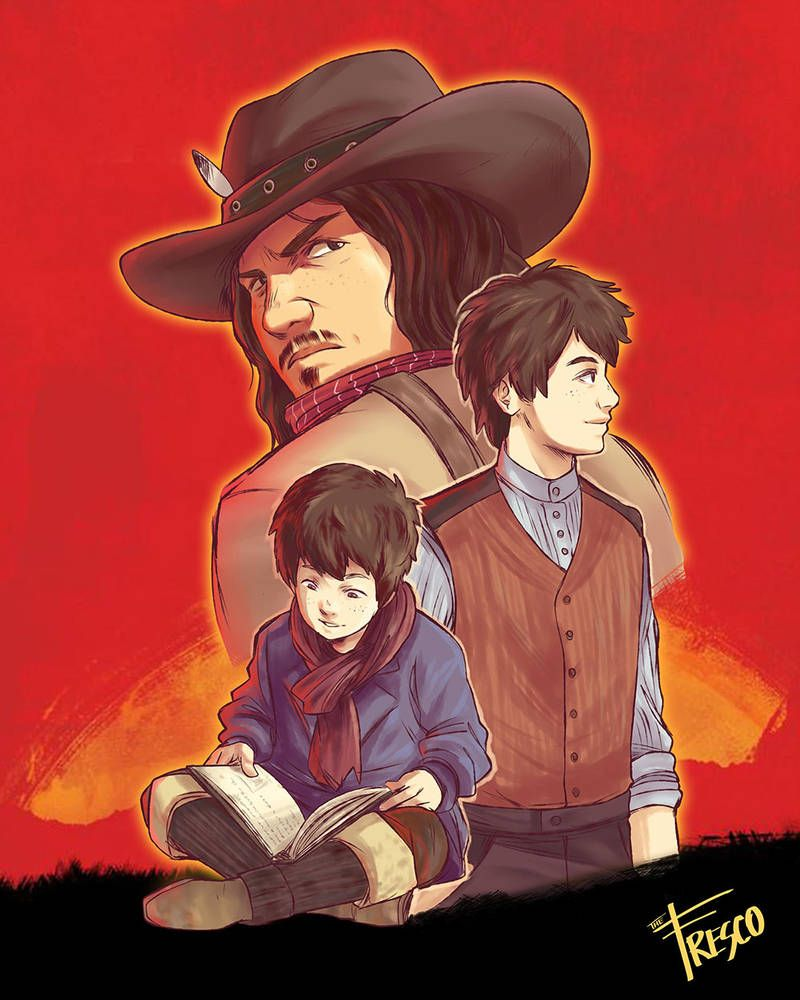
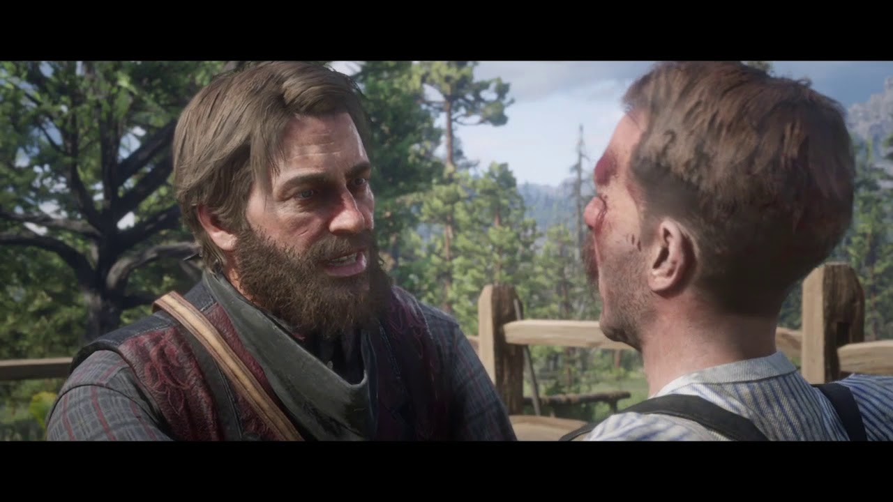
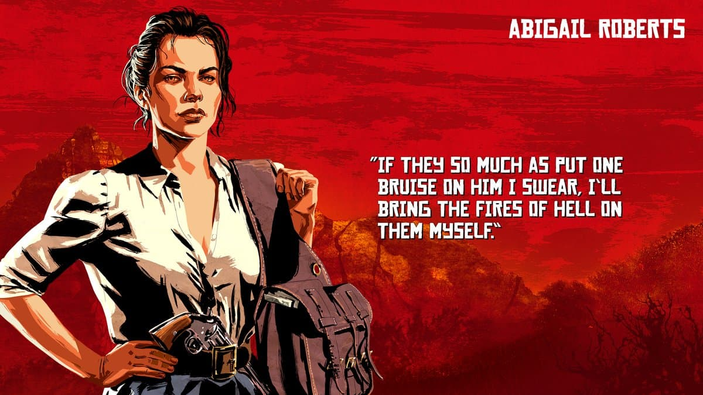
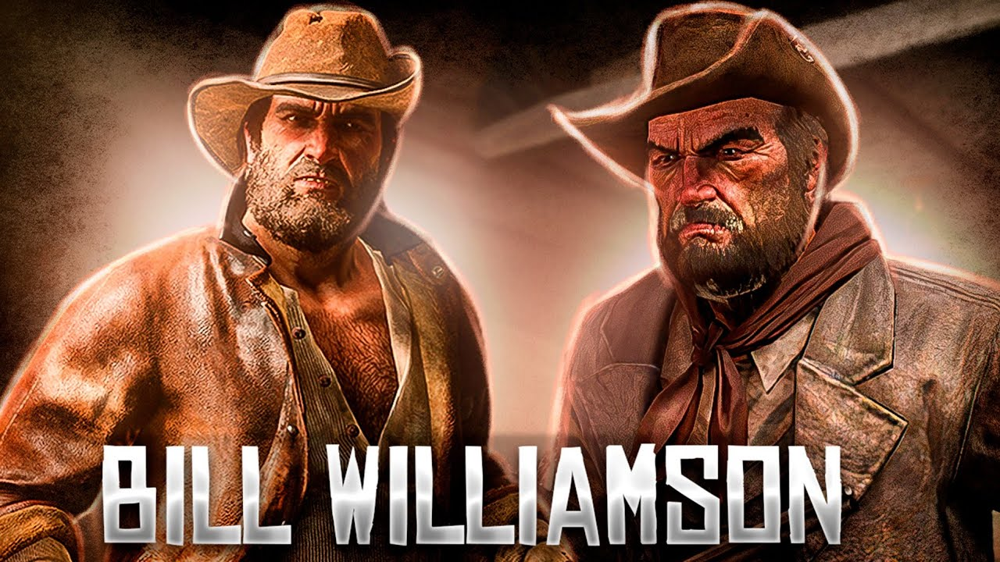
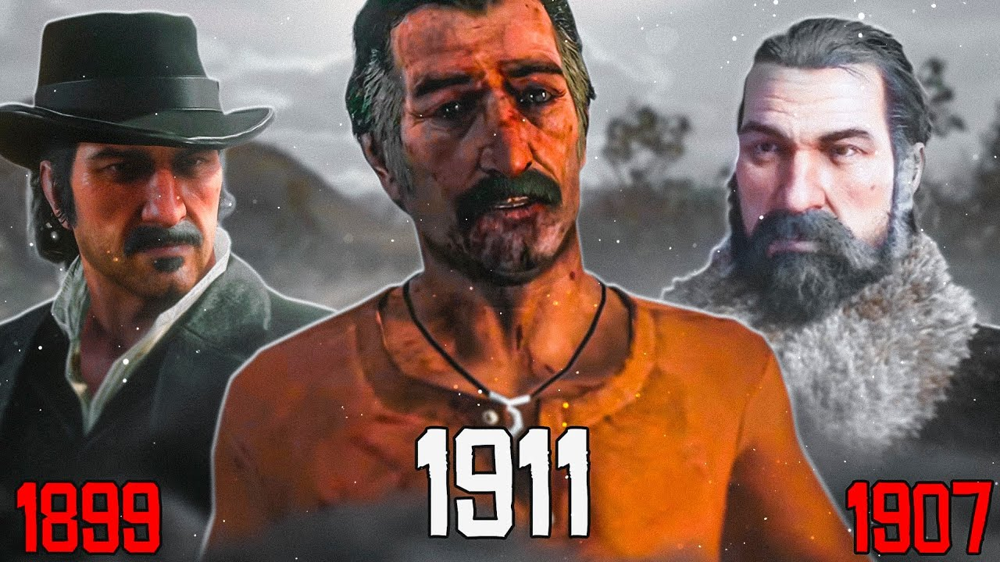

Red Dead Redemption 2:Teorias e Segredos

Red Dead Redemption 2 tem mais profundidade narrativa do que quase qualquer outro jogo. O mundo aberto é imenso e repleto de vida, os personagens são bem desenhados, complexos e realistas, e a história, embora indiscutivelmente mal conduzida do Capítulo 5 em diante, é envolvente e atraente.É um testemunho de quão bem RDR2 está escrito e quão perfeito Arthur Morgan é para a história que a Rockstar quer contar. Essas teorias só funcionam porque os personagens parecem tão verdadeiros na vida que é impossível não acreditar que o mundo continua à sua volta, longe de sua influência.
1 - Jack está escrevendo Red Dead
Esta é uma meta abordagem para o que pode ser nada mais do que um easter egg, mas ainda é uma teoria divertida que justifica a discussão. No GTA, vemos um livro chamado Red Dead Redemption escrito por um certo J. Marston, e é seguro assumir que o autor é Jack, não John. Ao longo do jogo, há várias referências a livros, o que pode parecer um gesto de concordância, se considerarmos que o que estamos passando é apenas uma nova versão de Jack. Jack pede para você pegar um livro para ele e é frequentemente mostrado para ler, enquanto Trelawny menciona a Arthur que ele acabaria em um livro um dia. Além disso, John zomba de Jack, perguntando se ele vai ficar rico “escrevendo histórias bobas”. O jogo claramente quer que você jogue da maneira mais honrada possível, o que faz sentido, considerando que Jack claramente admira Arthur e o pintaria dessa maneira. Há o fato óbvio de que o jogo é contado em capítulos também.
2 - Arthur deu Tuberculose, não Thomas Downes
Um grande motivador na busca de resgate do Arthur é sua tuberculose terminal, a ponto de poder argumentar que seu diagnóstico é o evento singular mais importante. Arthur acredita que ele conseguiu vencer Thomas Downes até a morte perto da abertura do jogo; Thomas cospe sangue na boca de Arthur, e mais tarde ele diz à freira que ele conseguiu espancar um homem até a morte por alguns dólares. No entanto, não há evidências claras para isso. O material circunstancial é bastante convincente, mas não poderia deixar de olhar para outra possibilidade. Muito perto do início do jogo, Oséias tem uma tosse persistente. Não é tão ruim quanto o de Arthur no entanto, isso significa que ele é melhor em esconder a doença ou é um sintoma não relacionado de sua idade (relativamente) avançada. No entanto, tematicamente, parece que a redenção de Arthur depende de expulsar Strauss do acampamento e fazer tudo o que pode para fazer certo com a Sra. Downes. Se Oséias deu a ele, isso é mais poético. Arthur está tentando se redimir concentrando-se em seu comportamento mais recente. Mas a verdade é que ele foi criado como um fora da lei. Não importa o que ele faça, ele estava condenado desde o começo.
3 – Abigail é um rato
A contradição óbvia é que o agente Milton diz diretamente a Arthur que é Micah. Mas então, Molly admite que foi ela, o que acaba sendo uma mentira, então vamos apenas olhar para as possibilidades aqui. Milton passou tempo suficiente assistindo a gangue (e quem quer que seja, tem uma toupeira no campo), então ele sabe que Arthur odeia Micah. Milton sabia que Arthur acreditaria que era Micah sem questionar. Abigail neste ponto está amarrada e desamparada, mas Milton sempre pensa no futuro: se ele disser a Arthur a verdade (hipotética) de que é Abigail, ele pode perder sua testemunha principal. Melhor protegê-la, caso Arthur ou Sadie escapem. Ele provavelmente não estava contando em ser baleado na cabeça por ela imediatamente depois. Quanto a por que poderia ser Abigail, há uma abundância de evidências. Ao rastrear o esconderijo de Dutch e roubar a chave, ela mostrou um lado desonesto. Além disso, como ela escapa ilesa quando Hosea é baleado e por que Marston é levada viva não é clara e é um pouco improvável, a menos que ela faça um acordo. Quanto ao ataque de Pinkerton depois de Guarma, os detetives obviamente esperariam até que Abigail lhes dissesse que os pesos pesados estavam de volta antes de virem procurar.
4 - Bill é gay e foi expulso do Exército
Normalmente, qualquer mídia popular tende a vir com duas teorias persistentes: um personagem morto / em coma e sonhando, ou um personagem é gay. No entanto, quando se trata de Bill, há muitas evidências convincentes de que, desta vez, a teoria está correta. Ao redor do acampamento, há uma carta que detalha por que Bill foi dispensado do exército, afirmando tentativa de assassinato e “desvios”. Uma palavra de código comum para a homossexualidade. Além disso, se você acreditar nessa teoria, há muitas interações que apoiam a ideia da homossexualidade de Bill. Durante a briga de bar em Valentine, Arthur diz sobre Bill “ele está tentando dar um soco no cara ou beijá-lo?”, O que por si só poderia ser uma piada, mas há algumas piadas muito parecidas para ser coincidência. Mais tarde, quando Hosea sugere que Lenny não deveria ter namorado Jenny porque seus nomes rimam, ele também usa os exemplos de Arthur e Martha, então Bill e Phil.
5 - Dutch tem lesão cerebral
Uma teoria controversa dos fãs, já que muitos argumentariam que o comportamento de Dutch está no centro dos temas do jogo. Ele mudou sob a pressão crescente, ou ele sempre foi assim, escondendo seu lado sombrio? Sugerir que ele tem uma lesão cerebral dá a ele um pouco de liberdade na questão, mas certamente há evidências convincentes. Muitos apontam para o fracassado trabalho bancário como o primeiro momento em que os holandeses quebram, depois de ver Hosea baleado na frente dele. No entanto, antes disso, ele alimenta Bronte aos jacarés. Então, se tomarmos isso como o início de sua imprudência, o que poderia ter começado? A teoria diz que é o roubo dos correios. Durante a fuga, Dutch bate a cabeça em um acidente de bonde e se queixa de uma dor de cabeça durante todo o trajeto. Isso nunca é mencionado novamente, mas o dano no lobo frontal geralmente causa impulsividade e mudanças no comportamento. No entanto, ele está discutindo com o Hosea durante a maior parte do jogo, e aparentemente as coisas estão indo a pior desde os eventos da “Água Negra”, antes da abertura do jogo. Talvez Dutch sempre tivesse essa escuridão dentro dele, e o trauma cerebral apenas exasperasse isso.